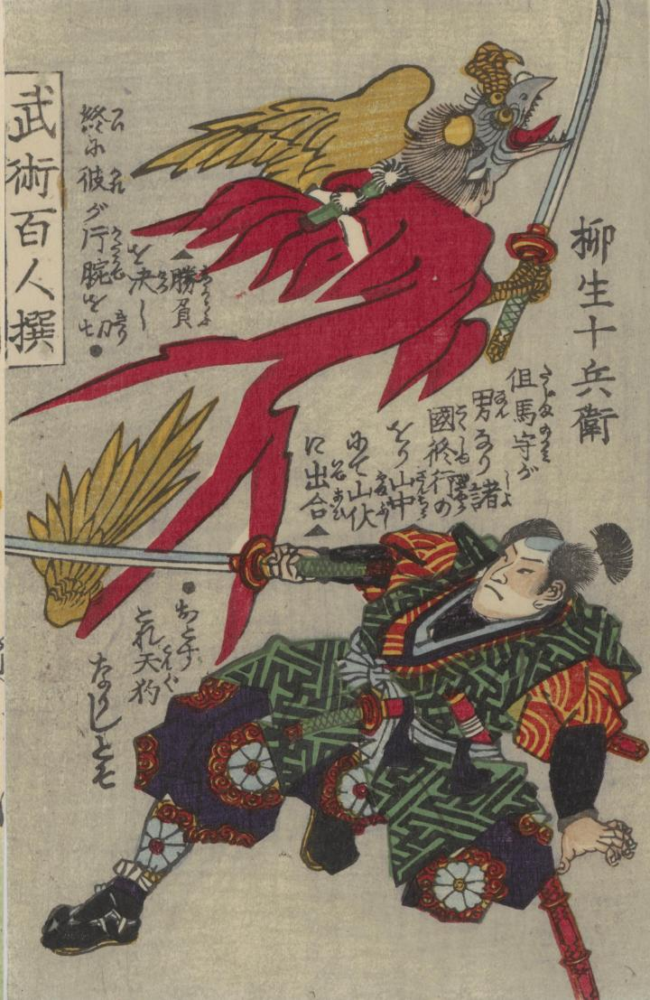

赤い着物で山伏の格好をしている天狗。刀を持っている。柳生十兵衛が片腕を切り落とした場面が描かれている。
著作者：錦朝樓芳虎／出典：親書誌：U426_nichibunken_0383：武術百勇選 : 全；ブジュツ ヒャクユウ セン : ゼン／日付：2014／資源識別子：U426_nichibunken_0383_0004_0000
Copyright (c)2010- International Research Center for Japanese Studies, Kyoto, Japan. All rights reserved.